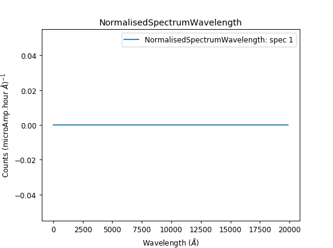

Hello, I have written a simple script that extracts monitor information from a workspace and creates a new workspace. I want to convert the units from time to wavelength but when I run the script I get a flat spectrum

Bellow is a copy of the script I am using.
Spectrum=Load("\\\\isis\\inst$\\NDXALF\\Instrument\\data\\cycle_19_1\\ALF79970.raw")
ExtractMonitors(Spectrum,MonitorWorkspace='Monitors')
Monitors=mtd['Monitors']
MonitorX=Monitors.readX(0)
MonitorY=Monitors.readY(0)
MonitorE=Monitors.readE(0)
Monitor=CreateWorkspace(MonitorX,MonitorY,MonitorE,UnitX='TOF',ParentWorkspace=Monitors)
NormalisedSpectrum=NormaliseByCurrent(Monitor)
NormalisedSpectrumWavelength=ConvertUnits(NormalisedSpectrum,Target='Wavelength')
Has anyone run into this problem before, I was hoping that by setting the Parent workspace my problem would be solved as the new workspace should have all the same log and instrument information.